Lab 6: Cameras, Machine Vision & OpenCV
Introduction¶
In this part of the course we'll make use of the Waffle's camera, and look at how to work with images in ROS. Here we'll look at how to build ROS nodes that capture images and process them. We'll explore some ways in which this data can be used to inform decision-making in robotic applications.
Getting Started¶
Step 1: Launch your ROS 2 Environment
You should now have access to ROS 2 via a Linux terminal instance. We'll refer to this terminal instance as TERMINAL 1.
Step 2: Launch VS Code
It's also worth launching VS Code now, so that it's ready to go for when you need it later on.
Step 3: Make Sure The Course Repo is Up-To-Date
In Lab 1 you should have downloaded and installed The Course Repo into your ROS environment. If you haven't done this yet then go back and do it now. If you have already done it, then it's worth just making sure it's all up-to-date, so run the following command in TERMINAL 1 now to do so:
Then build with Colcon:
And finally, re-source your environment:
Warning
If you have any other terminal instances open, then you'll need run source ~/.bashrc in these too, in order for any changes made by the Colcon build process to propagate through to these as well.
Step 4: Launch the Robot Simulation
In this session we'll start by working with the same mystery world environment from Part 5. In TERMINAL 1, use the following command to load it:
...and then wait for the Gazebo window to open: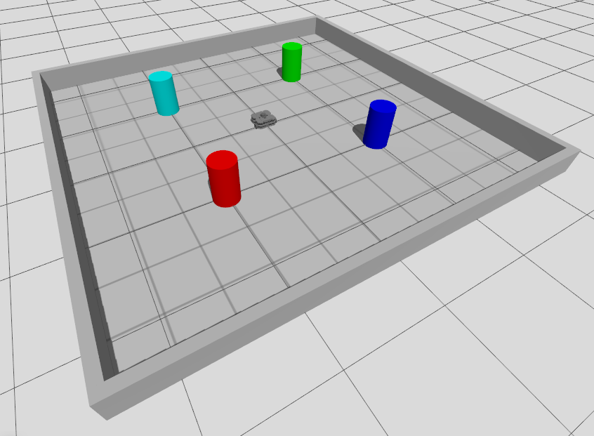
Working with Cameras and Images in ROS¶
Camera Topics and Data¶
There are a number of tools that we can use to view the live images that are being captured by a robot's camera in ROS. As with all robot data, these streams are published to topics, so we firstly need to identify those topics.
In a new terminal instance (TERMINAL 2), run ros2 topic list to see the full list of topics that are currently active on our system. Conveniently, all the topics related to our robot's camera are prefixed with /camera! Filter the ros2 topic list output using grep (a Linux command), to only show topics with this prefix:
This should provide the following filtered list:
/camera/camera_info
/camera/image_raw
/camera/image_raw/compressed
/camera/image_raw/compressedDepth
/camera/image_raw/theora
/camera/image_raw/zstd
The main item that we're interested in here is the raw image data, and the key topic that we'll therefore be using here is:
Run ros2 topic info on this to identify the interface used by this topic.
Then, run ros2 interface show on the interface to learn about the data format. You should end up with an output that looks like this (simplified slightly here):
# This message contains an uncompressed image
# (0, 0) is at top-left corner of image
std_msgs/Header header # Header timestamp should be acquisition time of image
builtin_interfaces/Time stamp
int32 sec
uint32 nanosec
string frame_id
uint32 height # image height, that is, number of rows
uint32 width # image width, that is, number of columns
string encoding # Encoding of pixels -- channel meaning, ordering, size
# taken from the list of strings in include/sensor_msgs/image_encodings.hpp
uint8 is_bigendian # is this data bigendian?
uint32 step # Full row length in bytes
uint8[] data # actual matrix data, size is (step * rows)
Questions
- What type of interface is used by this topic, and which package is this derived from?
- Using
ros2 topic echoand the information about the topic message (as shown above) determine the size of the images that our robot's camera will capture (i.e. its dimensions, in pixels). It will be quite important to know this when we start manipulating these camera images later on. - Finally, considering the list above again, which part of the message do you think contains the actual image data?
Visualising Camera Streams¶
We can view the images being streamed to the above camera topic (in real-time) in a variety of different ways, and we'll explore a couple of these now.
One way is to use RViz, which can be launched using the following ros2 launch command in TERMINAL 2:
Once RViz launches, you should see a camera panel in the bottom-left corner with a live stream of the images being obtained from the robot's camera.
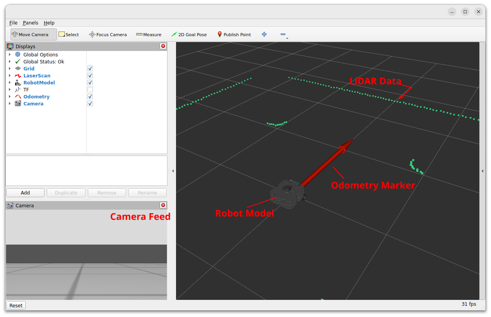
Close down RViz by entering Ctrl+C in TERMINAL 2.
Exercise 1: Using RQT whilst changing the robot's viewpoint¶
Another tool we can use to view camera data-streams is RQT.
-
Enter the following command in TERMINAL 2 to launch it:

-
From the top menu select
Plugins>Vizualisation>Image View.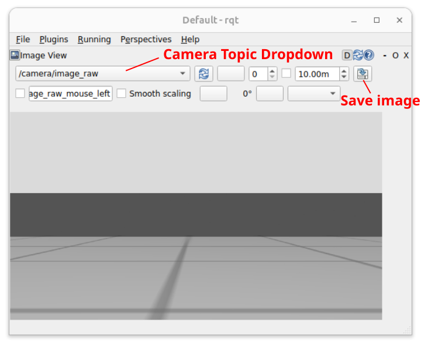
This allows us to easily view images that are being published to any camera topic on the ROS network. Another useful feature is the ability to save these images (as
.jpgfiles) to the filesystem: See the "Save image" button highlighted in the figure above. This might be useful later on... -
Click the drop-down box in the top left of the window to select an image topic to display. Select
/camera/image_raw(if it's not already selected). -
Keep this window open now, and launch a new terminal instance (TERMINAL 3).
-
Launch the
teleop_keyboardnode. Rotate the robot on the spot, keeping an eye on the RQT Image View window as you do this. Stop the robot once one of the coloured pillars in the arena is roughly in the centre of the robot's field of vision, then close theteleop_keyboardnode and RQT Image View by entering Ctrl+C in TERMINAL 3 and TERMINAL 2 respectively.
OpenCV and ROS¶
OpenCV is a mature and powerful computer vision library designed for performing real-time image analysis, and it is therefore extremely useful for robotic applications. The library is cross-platform and there is a Python API (cv2), which we'll be using to do some computer vision tasks of our own during this lab session. While we can work with OpenCV using Python straight away (via the API), the library can't directly interpret the native image format used by the ROS, so there is an interface that we need to use. The interface is called CvBridge, which is a ROS package that handles the conversion between ROS and OpenCV image formats. We'll therefore need to use these two libraries (OpenCV and CvBridge) hand-in-hand when developing ROS nodes to perform computer vision related tasks.
Object Detection¶
One common job that we often want a robot to perform is object detection, and we will illustrate how this can be achieved using OpenCV tools for colour filtering, to detect the coloured pillar that your robot should now be looking at.
Exercise 2: Object Detection¶
In this exercise you will learn how to use OpenCV to capture images, filter them and perform other analysis to confirm the presence and location of features that we might be interested in.
Step 1: Getting Started¶
-
First create a new package called
part6_visionusing the usual approach. -
Navigate into the
scriptsdirectory of this new package (usingcd), create a new file calledobject_detection.py(usingtouch), make this executable (chmod) and declare this as an executable in the package'sCMakeLists.txt(you've done this lots of times now, but check back through previous parts of the course if you need a reminder on how to do any of it). -
Open up the
object_detection.pyPython file in VS Code, and take a look at the following code:The object_detection.pycodeRead the annotations so that you understand how the node works and what should happen when you run it!
-
Copy the code into the empty
object_detection.pyfile and save it. -
Build the package with
colcon:-
In TERMINAL 2, make sure you're in the root of the Workspace:
-
Run
colcon build: -
And finally re-source the
.bashrc:
-
-
Run the node using
ros2 run ...An image should appear from the robot's camera and then vanish again after a few seconds.
-
As you should know from reading the explainer, the node has just saved this image to a location on your filesystem. Navigate to this filesystem location and view the image using
eog.What you may have noticed from the terminal output when you ran the
object_detection.pynode is that the robot's camera captures images at a native size of 1080x1920 pixels. That's over 2 million pixels in total in a single image (2,073,600 pixels per image, to be exact), each pixel having a blue, green and red value associated with it - so that's a lot of data in a single image file!Question
The size of the image file (in bytes) was actually printed to the terminal when you ran the
object_detection.pynode. Did you notice how big it was exactly?
Processing an image of this size is therefore hard work for a robot: any analysis we do will be slow and any raw images that we capture will occupy a considerable amount of storage space. The next step then is to reduce this down by cropping the image to a more manageable size.
Step 2: Cropping¶
We're going to modify the object_detection.py node now to:
- Capture a new image in its native size
- Crop it down to focus in on a particular area of interest
- Save both of the images (the cropped one should be much smaller than the original)
-
In your
object_detection.pynode locate the line: -
Underneath this, add the following additional lines of code:
-
Run the node again.
You'll be presented with two image windows now, but be patient! You'll have to wait for a few seconds for each window to open!
Navigate back to the directory where the images have been saved, and use
eogagain to view them and take a closer look.
The code that we've just added here has created a new image object called cropped_img from a subset of the original (cv_img). This was achieved by specifying a desired crop_height and crop_width relative to the original image dimensions (in pixels). Additionally, we've also specified where in the original image (in terms of pixel coordinates) we want this subset to start, using crop_y0 and crop_z0. This process is illustrated in the figure below:
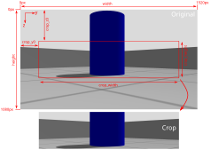
The original image (cv_img) is cropped using a process called "slicing":
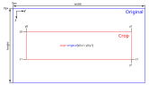
Step 3: Masking¶
As discussed above, an image is essentially a series of pixels each with a blue, green and red value associated with it to represent the actual image colours. From the original image that we have just obtained and cropped, we now want to get rid of any colours other than those associated with the pillar that we want the robot to detect. We therefore need to apply a filter to the pixels, which we will ultimately use to discard any pixel data that isn't related to the coloured pillar, whilst retaining data that is.
This process is called masking and, to achieve this, we need to set some colour thresholds. This can be difficult to do in a standard Blue-Green-Red (BGR) or Red-Green-Blue (RGB) colour space, and you can see a good example of this in this article from RealPython.com. We'll apply some steps discussed in this article to convert our cropped image into a Hue-Saturation-Value (HSV) colour space instead, which makes the process of colour masking a bit easier.
-
First, analyse the Hue and Saturation values of the cropped image. To do this, navigate to the
~/object_detectiondirectory, where the raw images are all being saved:Then, run the following ROS Node (from the
examplespackage), supplying the name of the cropped image as an additional argument: -
The node should produce a scatter plot, illustrating the Hue and Saturation values of each of the pixels in the image. Each data point in the plot represents a single image pixel and each is coloured to match its RGB value:
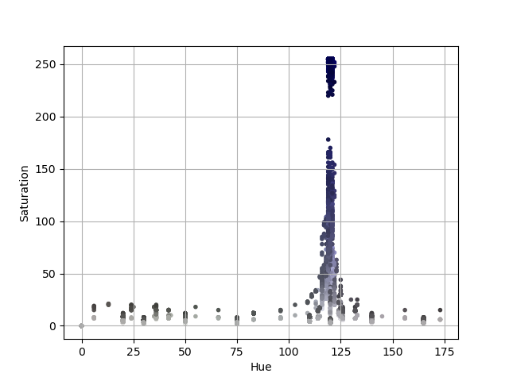
-
You should see from the image that all the pixels related to the coloured pillar that we want to detect are clustered together. We can use this information to specify a range of Hue and Saturation values that can be used to mask our image: filtering out any colours that sit outside this range and thus allowing us to isolate the pillar itself. The pixels also have a Value (or "Brightness"), which isn't shown in this plot. As a rule of thumb, a range of brightness values between 100 and 255 generally works quite well.
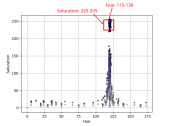
In this case then, we select upper and lower HSV thresholds as follows:
Use the plot that you have generated yourself to determine your own upper and lower thresholds.
OpenCV contains a built-in function to detect which pixels of an image fall within a specified HSV range:
cv2.inRange(). This outputs a matrix, the same size and shape as the number of pixels in the image, but containing onlyTrue(1) orFalse(0) values, illustrating which pixels do have a value within the specified range and which don't. This is known as a Boolean Mask (essentially, a series of ones or zeroes). We can then apply this mask to the image, using a Bitwise AND operation, to get rid of any image pixels whose mask value isFalseand keep any flagged asTrue(or in range). -
To do this, first locate the following line in your
object_detection.pynode: -
Underneath this, add the following:
-
Now, run the node again. A third image should also be generated now.
As shown in the figure below, the third image should simply be a black and white representation of the cropped image, where the white regions should indicate the areas of the image where pixel values fall within the HSV range specified earlier.
Notice (from the text printed to the terminal) that the cropped image and the image mask have the same dimensions, but the image mask file has a significantly smaller file size. While the mask contains the same number of pixels, these pixels only have a value of
1or0, whereas - in the cropped image of the same pixel size - each pixel has a Red, Green and Blue value: each ranging between0and255, which represents significantly more data.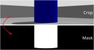
Step 4: Filtering¶
Finally, we can apply this mask to the cropped image, generating a final version of it where only pixels marked as True in the mask retain their RGB values, and the rest are simply removed. As discussed earlier, we use a Bitwise AND operation to do this and, once again, OpenCV has a built-in function to do this: cv2.bitwise_and().
-
Locate the following line in your
object_detection.pynode: -
And, underneath this, add the following:
-
Run this node again, and a fourth image should also be generated now, this time showing the cropped image taken from the robot's camera, but only containing data related to coloured pillar, with all other background image data removed (and rendered black):
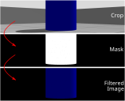
Image Moments¶
You have now successfully isolated an object of interest within your robot's field of vision, but perhaps we want to make our robot move towards it, or - conversely - make our robot navigate around it and avoid crashing into it! We therefore also need to know the position of the object in relation to the robot's viewpoint, and we can do this using image moments.
The work we have just done above led to us obtaining what is referred to as a colour blob. OpenCV also has built-in tools to allow us to calculate the centroid of a colour blob like this, allowing us to determine where exactly within an image the object of interest is located (in terms of pixels). This is done using the principle of image moments: essentially statistical parameters related to an image, telling us how a collection of pixels (i.e. the blob of colour that we have just isolated) are distributed within it. You can read more about Image Moments here. Using this process, the central coordinates of a colour blob can be obtained by considering some key moments of the image mask that we obtained from thresholding earlier:
- \(M_{00}\): the sum of all non-zero pixels in the image mask (i.e. the size of the colour blob, in pixels)
- \(M_{10}\): the sum of all the non-zero pixels in the horizontal (y) axis, weighted by row number
- \(M_{01}\): the sum of all the non-zero pixels in the vertical (z) axis, weighted by column number
Remember
We refer to the horizontal as the y-axis and the vertical as the z-axis here, to match the terminology that we have used previously to define our robot's principal axes.
We don't really need to worry about the derivation of these moments too much though. OpenCV has a built-in moments() function that we can use to obtain this information from an image mask (such as the one that we generated earlier):
So, using this we can obtain the y and z coordinates of the blob centroid quite simply:
Question
We're adding a very small number to the \(M_{00}\) moment here to make sure that the divisor in the above equations is never zero and thus ensuring that we never get caught out by any "divide-by-zero" errors. Why might this be necessary?
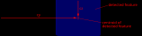
Once again, there is a built-in OpenCV tool that we can use to add a circle onto an image to illustrate the centroid location within the robot's viewpoint: cv2.circle(). This is how we produced the red circle that you can see in the figure above. You can see how this is implemented here:
object_detection.py nodeIn our case, we can't actually change the position of our robot in the z axis, so the cz centroid component here might not be that important to us for navigation purposes. We may however want to use the centroid coordinate cy to understand where a feature is located horizontally in our robot's field of vision, and use this information to turn towards it (or away from it, depending on what we are trying to achieve). We can then use this as the basis for some real closed-loop control.
Exercise 3: Using Image Moments for Robot Control¶
Inside the examples package there is a node that has been developed to illustrate how all the OpenCV tools that you have explored so far could be used to search an environment and stop a robot when it is looking directly at an object of interest. All the tools that are used in this node should be familiar to you by now, and in this exercise you're going to make a copy of this node and modify it to enhance its functionality.
Make sure the "Coloured Pillars" world is still active and continue with the following steps now in TERMINAL 2.
-
The node is called
colour_search.py, and it is located in thescriptsfolder of theexamplespackage. Copy this into thescriptsfolder of your ownpart6_visionpackage by first ensuring that you are located in the desired destination folder: -
Then, copy the
colour_search.pynode usingcpas follows: -
Open up the
colour_search.pyfile in VS Code to view the content. Have a look through it and see if you can make sense of how it works. The overall structure should be fairly familiar to you by now: we have a Python class structure, a Subscriber with a callback function, a timer with a callback containing all the robot control code, and a lot of the OpenCV tools that you have explored so far in this part of the course. Essentially this node functions as follows:- The robot turns on the spot whilst obtaining images from its camera (by subscribing to the
/camera/image_rawtopic). - Camera images are obtained, cropped, then a threshold is applied to the cropped images to detect the blue pillar in the simulated environment.
- If the robot can't see a blue pillar then it turns on the spot quickly.
- Once detected, the centroid of the blue blob representing the pillar is calculated to obtain its current location in the robot's viewpoint.
- As soon as the blue pillar comes into view the robot starts to turn more slowly instead.
- The robot stops turning as soon as it determines that the pillar is situated directly in front of it (determined using the
cycomponent of the blue blob centroid). - The robot then waits for a while and then starts to turn again.
- The whole process repeats until it finds the blue pillar once again.
- The robot turns on the spot whilst obtaining images from its camera (by subscribing to the
-
Add the
colour_search.pynode to the list of Python executables in yourpart6_vision/CMakeLists.txtfile. -
Add the following additional dependency to your
part6_vision/package.xml: -
Re-build your package with
colcon. -
Run the node as it is to see this in action. Observe the log messages as they are printed to the terminal throughout execution.
-
Your task is to then modify the node so that it stops in front of every coloured pillar in the arena (there are four in total, each of a different colour, as you know). For this, you may need to use some of the methods that you have explored in the previous exercises.
- You might first want to use some of the methods that we used to obtain and analyse some images from the robot's camera:
- Use the
teleop_keyboardnode to manually move the robot, making it look at every coloured pillar in the arena individually. - Run the
object_detection.pynode that you developed in the previous exercise to capture an image, crop it, save it to the filesystem and then feed this cropped image into theimage_colours.pynode from theexamplespackage (as you did earlier) - From the plot that is generated by the
image_colours.pynode, determine some appropriate HSV thresholds to apply for each coloured pillar in the arena.
- Use the
- Once you have the right thresholds, then you can add these to your
colour_search.pynode so that it has the ability to detect every pillar in the same way that it currently detects the blue one.
- You might first want to use some of the methods that we used to obtain and analyse some images from the robot's camera:
PID Control and Line Following¶
Line following is a handy skill for a robot to have! We can achieve this on our TurtleBot3 using its camera system and the image processing techniques that have been covered so far in this session.
A well established algorithm for closed-loop control is known as PID Control, and this can be used to achieve such line following behaviour.
At the heart of this is the principle of Negative-Feedback control, which considers a Reference Input, a Feedback Signal and the Error between these.
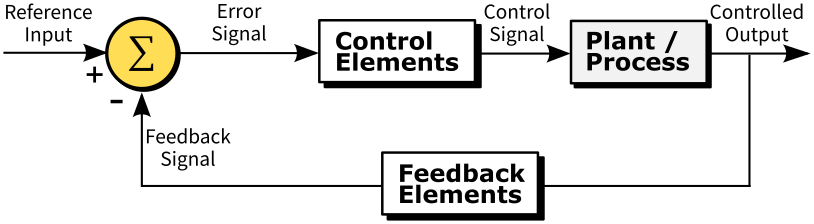
Adapted from Arturo Urquizo, CC BY-SA 3.0, via Wikimedia Commons
{kind=link}
The Reference Input represents a desired state that we would like our system to maintain. If we want our TurtleBot3 to successfully follow a coloured line on the floor, we will need it to keep the colour blob that represents that coloured line in the centre of its view point at all times. The desired state would therefore be to maintain the cy centroid of the colour blob in the centre of its vision.
A Feedback Signal informs us of what the current state of the system actually is. In our case, this feedback signal would be the real-time location of the coloured line in the live camera images, i.e. its cy centroid (obtained using processing methods such as those covered in Exercise 3 above).
The difference between these two things is the Error, and the PID control algorithm provides us with a means to control this error and minimise it, so that our robot's actual state matches the desired state. i.e.: the coloured line is always in the centre of its viewpoint.
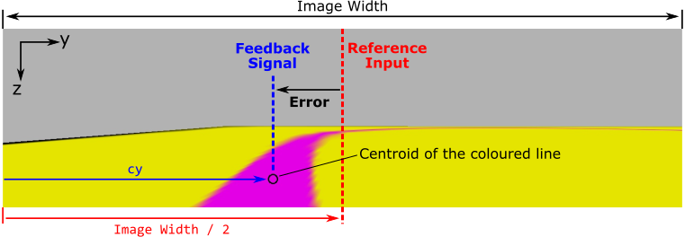
The PID algorithm is as follows:
Where \(u(t)\) is the Controlled Output, \(e(t)\) is the Error (as illustrated in the figure above) and \(K_{P}\), \(K_{I}\) and \(K_{D}\) are Proportional, Integral and Differential Gains respectively. These three gains are constants that must be established for any given system through a process called tuning. We will explore this tuning process in the practical exercise that follows.
Exercise 4: Line Following¶
Part A: Setup¶
-
Make sure that all ROS processes from the previous exercise are shut down now, including the
colour_search.pynode, and the Gazebo simulation in TERMINAL 1. -
In TERMINAL 1 launch a new simulation from the
simulationspackage:Your robot should be launched onto a long thin track with a straight pink line painted down the middle of the floor:
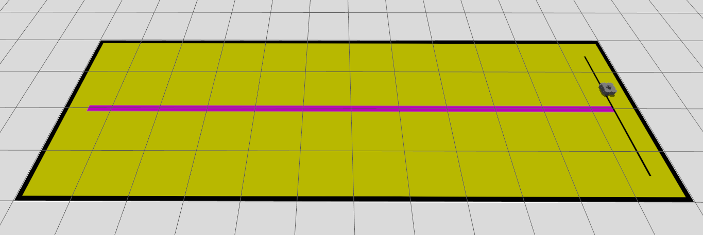
-
In TERMINAL 2 you should still be located in your
part6_vision/scriptsdirectory, but if not then go there now: -
Perform the necessary steps to create a new empty Python file called
line_follower.pyand prepare it for execution as a node within your package. -
Once that's done open up the empty file in VS Code, then have a look at the following code template:
The line_follower.mdcode templateThe template contains three "TODOs" that you need to complete, all of which are explained in detail in the code annotations, so read these carefully. Ultimately, you did all of this in Exercise 2, so go back here if you need a reminder on how any of it works.
Your aim here is to get the code to generate a cropped image, with the coloured line isolated and located within it, like this:
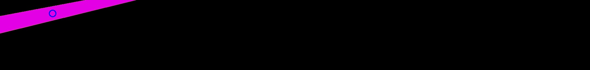
Part B: Implementing and Tuning a Proportional Controller¶
Referring back to the equation for the PID algorithm as discussed above, the Proportional, Integral and Differential components all have different effects on a system in terms of its ability to maintain the desired state (the reference input). The gain terms associated with each of these components (\(K_{P}\), \(K_{I}\) and \(K_{D}\)) must be tuned appropriately for any given system in order to achieve stability of control.
A PID Controller can actually take three different forms:
- "P" Control: Only a Proportional gain (\(K_{P}\)) is used, all other gains are set to zero.
- "PI" Control: Proportional and Integral gains (\(K_{P}\) and \(K_{I}\)) are applied, the Differential gain is set to zero.
- "PID" Control: The controller makes use of all three gain terms (\(K_{P}\), \(K_{I}\) and \(K_{D}\))
In order to allow our TurtleBot3 to follow a line, we actually only really need a "P" Controller, so our control equation becomes quite simple, reducing to:
The next task then is to adapt our line_follower.py node to implement this control algorithm and find a proportional gain that is appropriate for our system.
-
Return to your
line_follower.pyfile. Underneath the line that reads:Paste the following additional code:
kp = self.get_parameter('kp').get_parameter_value().double_value reference_input = ? feedback_signal = cy error = feedback_signal - reference_input ang_vel = kp * error self.get_logger().info( f"\nkp = {kp:.4f}," f"\nError = {error:.1f} pixels," f"\nControl Signal = {ang_vel:.2f} rad/s." )Fill in the Blank!
What is the Reference Input to the control system (
reference_input)? Refer to this figure from earlier.Here we have implemented our "P" Controller. The Control Signal that is being calculated here is the angular velocity that will be applied to our robot (the code won't make the robot move just yet, but we'll get to that bit shortly!) The Controlled Output will therefore be the angular position (i.e. the yaw) of the robot.
-
Run the code as it is, and consider the following:
- What proportional gain (\(K_{P}\)) are we applying?
- What is the maximum angular velocity that can be applied to our robot? Is the angular velocity that has been calculated actually appropriate?
- Is the angular velocity that has been calculated positive or negative? Will this make the robot turn in the right direction and move towards the line?
-
Let's address the third question (c) first...
A positive angular velocity should make the robot turn anti-clockwise (i.e. to the left), and a negative angular velocity should make the robot turn clockwise (to the right).
To start with, the line should be to the left of the robot, which means a positive angular velocity is required to make the robot turn towards it.
If the value of the Control Signal that is being calculated by our proportional controller (as printed to the terminal) is negative, then this isn't correct.
The sign of our proportional gain (\(K_{P}\)) should be changed in order to correct this. \(K_{P}\) is defined in our code as a Parameter called
kp, and if we don't explicitly define a value for this (which so far we have not done) then a default value will be used. We defined this default value in our Node's__init__(), when we declared the parameter to begin with:With your node still running, change the value now with a
... the value of the Control Signal (i.e.ros2 paramcall from TERMINAL 3:ang_vel) should now be greater than zero, which (when velocity commands are actually published) will make the robot turn left, i.e. towards the line, thereby attempting to minimise the position error. -
Stop the node with Ctrl+C. Change the code so that the
declare_parameter()line now sets thekpparameter to be negative by default: -
Next, let's address the second of the above questions (b)...
The maximum angular velocity that can be applied to our robot is ±1.82 rad/s. If our proportional controller is calculating a value for the Control Signal that is greater than 1.82, or less than -1.82 then this needs to be limited. In between the following two lines of code:
Insert the following:
-
Finally, we need to think about the actual proportional gain that is being applied. This is where we need to tune our system by finding a proportional gain (\(K_{P}\)) value that controls our system appropriately.
Return to your
line_follower.pyfile. Underneath the lines that read:self.get_logger().info( f"\nkp = {kp:.4f}," f"\nError = {error:.1f} pixels," f"\nControl Signal = {ang_vel:.2f} rad/s." )Paste the following:
self.vel_cmd.twist.linear.x = 0.1 self.vel_cmd.twist.angular.z = ang_vel self.vel_pub.publish(self.vel_cmd)Once running, the code should now make the robot move with a constant linear velocity of 0.1 m/s at all times, while its angular velocity will be determined by our proportional controller, based on the controller error and the proportional gain parameter
kp.The figure below illustrates the effects different values of proportional gain can have on a system.
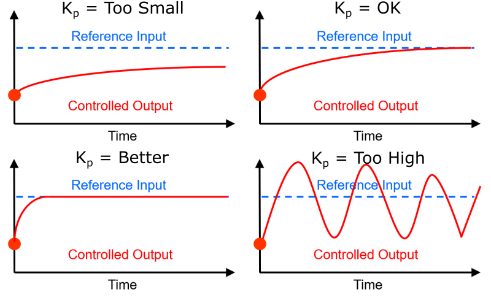
Courtesy of Prof. Roger Moore
Taken from COM2009 Lecture 6: PID ControlRun the code and see what happens. You should find that the robot behaves quite erratically, indicating that
kp(currently at 0.01) is probably too large. -
Try reducing
kpby a factor of 100. From TERMINAL 3:With a modified
kpgain, you should find that the robot now gradually approaches the line, but it can take a while for it to do so.Tip
The line that the robot is trying to follow is quite long, but if it gets to the end of it, or if it gets off track and ends up quite far away from the line, then you can always:
- Stop your
line_following.pynode with Ctrl+C. -
Launch the
teleop_keyboardnode: -
Drive the robot back to the line manually.
- Stop the
teleop_keyboardnode with Ctrl+C then launch yourline_following.pynode again.
- Stop your
-
Next, increase
kpby a factor of 10:Once again (if you need to), use the
teleop_keyboardnode to get the robot back to the start line. Then, re-launch theline_follower.pynode.Update the proportional gain once more with a
ros2 paramcall:With this new
kpgain, the robot should now reach the line much quicker, and follow the line well once it reaches it. -
Could
kpbe modified any more to improve the control further? Play around a bit more and see what happens. We'll but this to the test on a more challenging track in the next part of this exercise.
Part C: Advanced Line Following¶
-
Shut down the Line Following "tuning" environment if it's still running.
-
Then, in TERMINAL 1 fire up a new one:
Your robot should be launched into an environment with a more interesting line to follow:
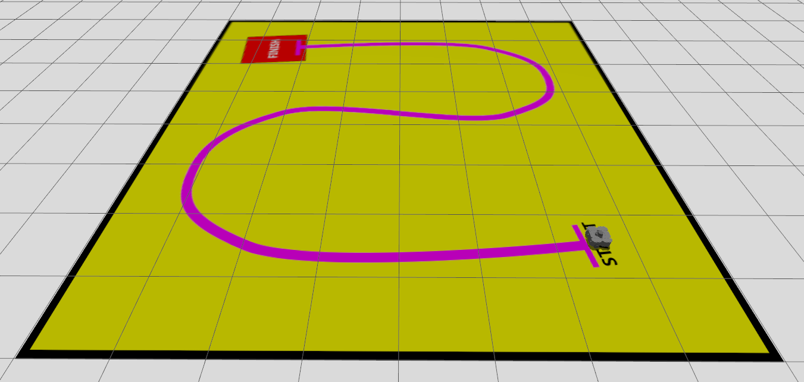
-
In TERMINAL 2, run your
line_follower.pynode and see how it performs. Does your proportional gain need to be adjusted further to optimise the performance? -
Next, think about conditions where the line can't initially be seen...
As you know, the angular velocity is determined by considering the
cycomponent of a colour blob representing the line. What happens in situations where the blob of colour isn't there though? What influence would this have on the Control Signals that are calculated by the proportional controller? To consider this further, try launching the robot in the same arena but with a different starting pose, and think about how you might approach this situation: -
Finally, what happens when the robot reaches the finish line? How could you add additional functionality to ensure that the robot stops when it reaches this point? What features of the arena could you use to trigger this?
Submission on Google Classroom¶
To complete Lab 6, you must finish the final obstacle-aware line following challenge and upload your package.
Final Challenge: The Obstacle-Aware Line Follower¶
Using the vision and control concepts you've learned, combine line following with obstacle avoidance.
- The Goal: Create a new node (e.g.,
obstacle_aware_line_follower.py) that makes the TurtleBot3 follow a line, but safely stop or steer away if a coloured obstacle blocks its path. - The Logic:
- Process the camera image to detect two different colours (the line and the obstacle).
- Implement a priority-based control system: if the obstacle's size (image moment) exceeds a safe threshold, override the line-following behavior to avoid a collision.
- If the path is clear, default back to normal PID line following.
Preparation for Upload¶
Ensure your part6_vision package is correctly compiled, free of build errors, and all Python scripts have executable permissions.
- Clean your workspace:
- Compress your package:
Submission Checklist¶
Your part6_submission.zip must contain:
scripts/:object_detection.py(From Exercise 2).colour_search.py(From Exercise 3).line_follower.py(From Exercise 4).obstacle_aware_line_follower.py(The Final Challenge).
package.xml: Must include all necessary dependencies (e.g.,rclpy,sensor_msgs,geometry_msgs,cv_bridge).CMakeLists.txt: Correctly configured with all Python scripts listed under theinstall(PROGRAMS ...)block.
Upload your part6_submission.zip to the "Lab 6: Cameras, Machine Vision & OpenCV" assignment on Google Classroom.